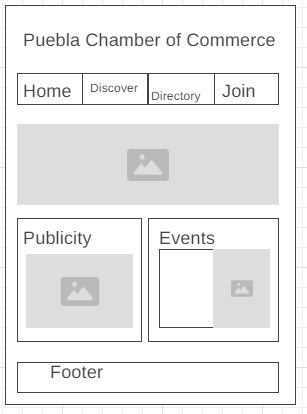
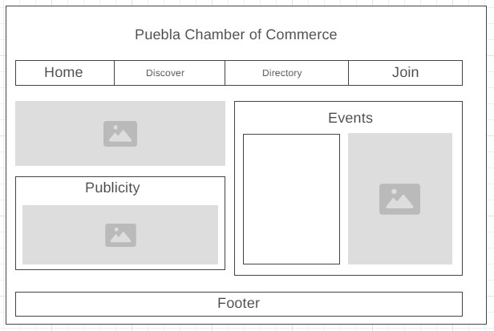

Puebla Chamber of Commerce
The site name reflects the role and purpose of the chamber in promoting local business like industry and tourism.
Site Purpose
The chamber website aims to:
- Provide information about local businesses and services
- Promote economic development initiatives
- Create associations with local businesses
Scenarios
- What events are scheduled for local businesses this month?
- How can I become a member of the Puebla chamber?
- Where can I find resources and partners for starting a business in the area?
- How I can contact local people to get help and information?
Color Schema
The color scheme will consist of:
- Main Color: #3366cc (used for headings and accents)
- Secondary Color: #6699ff (used for backgrounds and highlights)
Typography
The website will primarily use the font "Roboto" for headings and "Open Sans" for body text.
Wireframe
These are the wireframes for the mobile and desktop versions of the homepage:
 